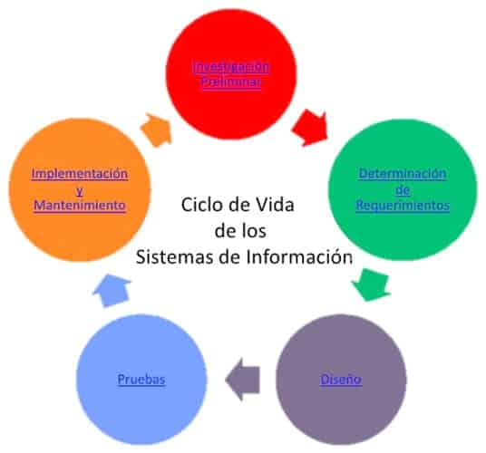

Joanna Nicole Uriostegui Magaña
a01711853@tec.mx
445 107 0745
A01711853
Soy una estudiante de la carrera de Ingeniería en tecnologías computacionales, interesada en el desarrollo de software. Me gusta aprender y mejorar la calidad de mis proyectos. Nacída en Moroleón, Guanajuato. Me encanta bailar ballet, tap y contemporáneo, así como escuchar música y jugar videojuegos o ver streams y series. Me interesa mucho conocer como aplicar la práctica vista en clases en mi vida laboral y personal. Me llama mucho la atención las aplicaciones y a donde puede llegar la tecnología con algo de creatividad, disciplina y organización.
Dispensador de comida automática para peces
que monitorea la calidad del agua mediante
los sensores de temperatura y tubidez.
Programando los sensores y un servomotor
encargado de dispensar la comida con un ESP32.
Recolectando los datos en una base de datos
MySQL visualizados en una página web desarrollada
con JavaScript, HTML y CSS. Integrando tecnologías
como Node.js (Express), Postman, GitHub, Render
y Railway para su implementación y despliegue
en la nube.
Repositorio
El proyecto consiste en el modelado de una
tienda de videojuegos, la cual tiene varios
tipos de productos, desde juegos, consolas
y accesorios en el inventario, en el que se
agregarán o eliminarán los productos para
poder ofrecerlos en la tienda. Los usuarios
pueden comprar con base en el inventario,
pueden agregar o eliminar productos a la
clase carrito, así como obtener el costo de
sus productos y checar si hay descuentos
disposibles todo mediante programación
orientada a objetos.
Repositorio
El Internet son todas las computadoras y la conexión que tienen, mientras que la WWW es la red de información que se puede acceder a través de Internet (Redacción, 2019).
(Collado, 2025)
Se usa POST debido a que son datos sensibles entonces se colocan en el cuerpo y mediante POST no se envían en la red.
Se utiliza GET ya que se está solicitando información de un recurso.
El código 200 significa que la solicitud se ha realizado correctamente.
No, ya que el desarrollador no controla que URL fue ingresada por el usuario entonces no es su responsabilidad.
Sí, porque el desarrollador controla el código de la página web.
Significa que el atributo ya no se utiliza pero hay varios que con los que los puedes sustituir. Algunos elementos de HTML 4 que en HTML5 estén desaprobados son: applet, acronym, bgsound, dir, hgroup, isindex, basefont, big, center, font, menu, etc (Estas Son Las Etiquetas Obsoletas En HTML5: ¡Actualízate! | Tokio, 2022).
Soporte para video, audio, canvas, svg geolocalización, web storage
Una tabla registros (filas) y campos (columnas).
Los principales controles en HTML5 son: input, select, textarea, button, checkbox, radio, file, password, submit, reset, etc. (Controles De Formulario Originales - Aprende Desarrollo Web | MDN, n.d.)
El navegador que utilizo es Google Chrome y tiene un 99% de soporte a HTML 5.
El ciclo de vida de los sistemas de información es el conjunto de fases que un sistema de información atraviesa desde su concepción hasta su desmantelamiento.
(Guerrero, 2015)
El ciclo de desarrollo de sistemas de información es el conjunto de fases que un sistema de información atraviesa desde su concepción hasta su desmantelamiento.